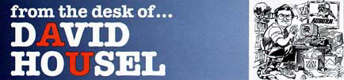

A successful athletics program has to do four things: win, educate its student athletes, pay its bills and abide by the rules. Competing in the 21st Century What will Auburn and other institutions have to do to successfully compete in the next century? Forget the millennium. Concentrate on the next century. That's far enough. The answer is simple. Woody Hayes, the Ohio State coach who never fully appreciated Auburn from 1957 on, said it best in the title of his biography, "You Win With People." You win with people. For Auburn to be successful in the 21st century and in the centuries beyond, for Auburn to be successful "down through the years" as Coach Jordan would say, Auburn will have to continue to hire good people and recruit good people. Good people make all the difference. By good people we are not talking about goody-goody-two-shoes people, whatever that means. We are talking about good quality people. Good, strong, honorable people with a vision of what Auburn can be and what Auburn ought to be. People with the strength, courage, stamina and ability to get Auburn there, where it ought to be. The way will not be easy. It never is. But when it comes to Auburn the effort is always worthwhile. Always. We need to continue recruiting quality student-athletes Ð good young people who appreciate their God-given athletic ability and have an innate sense of the potential they possess in their lives. They might not be able to say it or understand it, but they have to sense it and yearn for it. To be a part of something good, to be better than they are, to be a champion. The best. Athletic ability--sound minds and sound bodies--are only a part of the equation. There is a spiritual aspect as well. Sound minds in sound bodies and spirits that are unafraid. That is a beautiful concept. Spirits that are unafraid. We are not physical creations with a spiritual dimension. We are spiritual creations with a physical dimension. Spirits that are unafraid. Auburn's strength, down through the years, has been its understanding of that spiritual dimension and the effect it can have on our lives. It has accomplished great things for Auburn in the first 100 years and it will, it must, accomplish even greater things in the next 100 years. Spirits that are unafraid. There will be many needs for Auburn in the coming years. Academic centers, indoor tennis facilities, weight rooms, lights for the soccer field, new pools, more seats at Hitchcock Field, track renovations, new dressing rooms and more seats at Jordan-Hare Stadium. All of these challenges will be there, and all of them will be met. If... If, and only if, Auburn continues to hire good people who recruit good people. People who believe in hard work, sacrifice, commitment and dedication. People who believe in each other and are unafraid of where the future might take them. People who believe in the spirit. They must also believe in the human touch. It is the human touch that has set Auburn apart down through the years. It must continue to set Auburn apart in the years to come. Auburn's success lies not in raiment, fancy clothes, fancy this or that. Auburn's success lies in Auburn people dedicating themselves to Auburn, its welfare, its well-being and its future. So it has been, so it must always be. We owe it to those who have gone before and, more importantly, to those who follow. © 1999 Auburn Network, Inc. |